序
最近在网上找到了苦寻多时的cs2_keypatch，可以破解CatSystem2引擎游戏防复制机能的的补丁。这下终于也可以安心地把cs2引擎的游戏转存到移动硬盘里去了。
但在找到破解补丁后，无意间却燃起了另外的兴趣，毕竟自己也在某漫画汉化组混翻译混了这么久，该尝试一下翻译以外的事情了。既然破都破解了，何不直接来体验一次游戏汉化看看呢。
首先根据了解，GAL程序有关的汉化从来说可简单概括为3方面：
1、解包——破解主程序，解密和解压资源包
2、转码——把解压所得资源转换为常见的音视频及文本格式交由相关人员处理，同时将主程序由日文编码转为中文编码
3、封包与测试
既然是程序上的处理，那自然少不了有关编程，有关代码的事。然而目前程序白痴的我当然不会用代码解决问题的，所以每一步也当然是尽可能地先找现成的工具和教程。但现实很残念，这些方面似乎很难找到太多现成的傻瓜式工具或教程，于是只好抱起硬着头皮上，能走多远算多远，实在不行就去抱编程大佬大腿的心态，开始了Galgame汉化的体验。
解包部分
先来破解主程序。这个简单，把cs2.exe（为了方便后续操作，我把主程序名改成cs2.exe）拖到cs2_keypatch.exe（找这玩意可花了我好长时间···在这里找，提取码：djm0）上进行破解，此时会有破解成功的提示，游戏就可以在不同的电脑上直接打开而不用重新安装了。
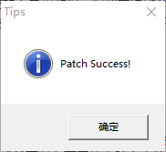
下一步，解压资源包，由于我的主要目的放在文本上，故以下对音视图的解压转码未作要求。Cs2引擎的剧本资源均被封在scene.int文件中，这一文件用GARbro（Game Resource browser，游戏资源浏览器，支持中文，在这里找）工具亦可以轻松提取，它可以解包多款游戏的音视图文等多类资源。
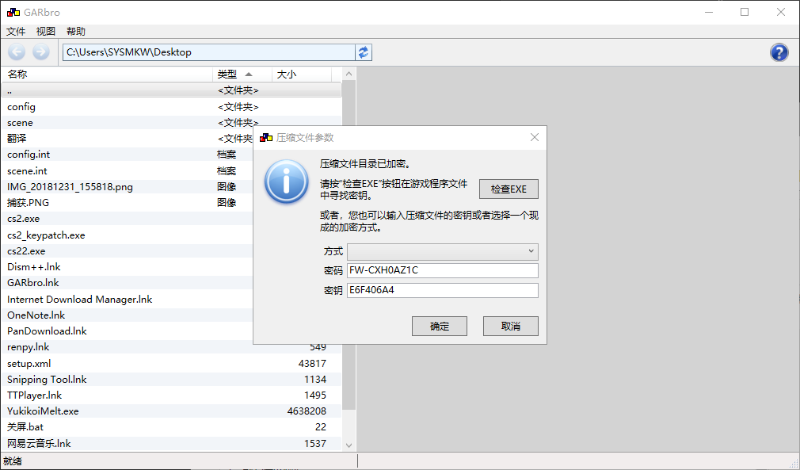
转码部分
1.脚本的转码
解开以后会得到很多XX.cst，这就是脚本。新建一个scene文件夹，将所有XX.cst放到其中，并把scene文件夹移到游戏安装目录下，此时scene.int就可以移出游戏安装目录备用了。至少在cs2引擎下它可以直接读取与.int压缩包同名文件夹下文件的，所以也不用再多操心把XX.cst打包到scene.int的事，要考虑的只是XX.cst与XX.txt之间的转换。
从这一步起，难度就开始增加了。第一是找工具，要找一个既能解成文本又能封回去还能转换编码的真心不容易；第二找到了之后得会用，这一步的工具基本没有GUI，得用命令行，于是此处成为我第一个原地打转比较久的点···
（其实确实找到一个有GUI，是由来自巴西的marcussacana大大制作的CatSceneEditor，在这里找，只不过那是人家英化专用的，汉化用不了，会乱码，如下图）
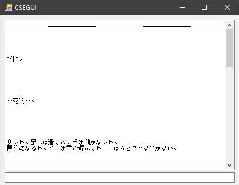
找了很久以后终于找到一个符合预期的，由国人AmaF大大用go语言编写的小工具。接下来开始折腾go···
准备好环境：
Go语言编译器 - https://golang.org/doc/install
Git - https://git-scm.com/downloads
开始安装这个小工具：
打开cmd，用go get命令从网上下载并安装。值得一提的是境内由于网络原因，直接go get会报错，一番摸索之后，得出两个直接从网络下手的，比较简单的解决方案：
①VPN
②SS/SSR全局代理+Proxifier达到VPN的效果，覆盖终端类程序走代理。
除这两个外的替代方案虽然可以绕过网络原因，但从操作上说要复杂些，所以我没有采用。另外提一句，关于win10 uwp应用在SS/SSR代理下无法联网的问题，则需要搭配Fiddler这款软件解决。
go get github.com/regomne/eutil/codec
go get github.com/regomne/eutil/textFile
go get github.com/regomne/chinesize/CatSystem2/cstTextProc
三行代码执行完毕以后，在go的环境变量下bin文件夹中（默认的话就是C:/Users/xxxx/go/bin/），可以见到安装好的cstTextProc.exe，此时go的任务就完成了，正式开始转换。
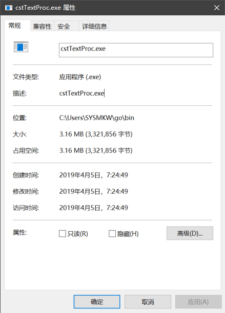
把它移到C:/Users/xxxx/下，方便接下来cmd的操作，免得每次都要换目录执行程序。然后将想要转换的.cst放到与转换工具相同的目录下，打开cmd，先把cstTextProc.exe改名cst.exe，再拖进cmd，回车可以看到该工具的用法：
-cp string
the code page used in txt (default "932")
-cst string
specify the cst name
-e extract cst to txt
-o string
output file name(txt or cst)
-p pack txt to a cst
-txt string
specify the txt name(used in pack)
比如我下面选择展开OP01.cst（游戏中第一处剧情的脚本，方便查看接下来的测试的效果），输入命令：
cst -e -cst OP01.cst -o OP01.txt -cp 932
注释：Windows简繁日代码页
936—简体中文（GBK）
950—繁体中文（大五码）
932—日文（Shift_JIS）
这里要解开的OP01.cst用的是Shift_JIS编码，即932。
解开以后，打开同一目录下输出的OP01.txt，文本是可以正常显示日文的。我把其中几句先翻译成中文，保存，以做接下来的测试。
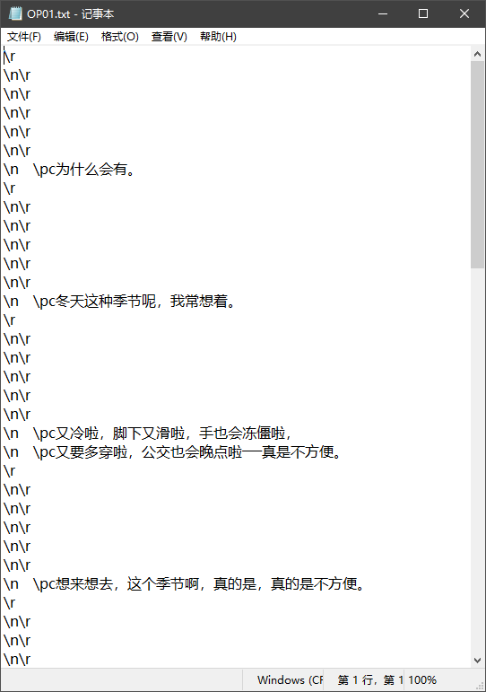
输入命令：
cst -p -cst OP01.cst -txt OP01.txt -o OP01.cst -cp 936
封回用cp936，GBK的代码页，这样就完成了文本的转码。将得到的新的OP01.cst复制回游戏安装目录的scene文件夹中。
进行到这一步，我曾满心欢喜地以为这就算汉化完成了，直到我打开主程序程式cs2.exe···结果文本显示全是乱码。
其实这是因为游戏主程序的字符编码方式仍是日文。这里开始，进入主程序反编译的步骤，修改字符编码和边界检查代码。自然地，这里就成为了我第二个原地打转的点。对字符显示原理，字符编码和汇编知识储备完全为零的我来说，做这一步简直是举步维艰···
2.主程序的修改
（1）GDI32.CreateFontIndirectA
对于cs2引擎，这个函数所调用参数中字符集的值即是要修改的地方。一般日文游戏汉化经常用到的字符集有SHIFTJI_CHARSET(日文) 、GB2312_CHARSET(简中)、CHINESEBIG5_CHARSET(繁中)所对应的值分别为128、134、136，转换成十六进制为0x80、0x86、0x88。简单地说，要使程序使用简体中文，就是要把程序中字符集的值由80改成86。
下载OllyDbg，各个窗口功能如下图：
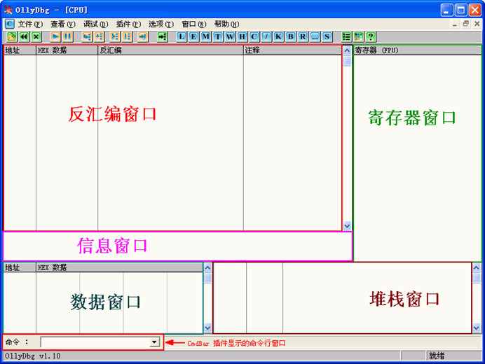
OllyDbg中加载cs2.exe，在反汇编窗口中右键，选择图示选项
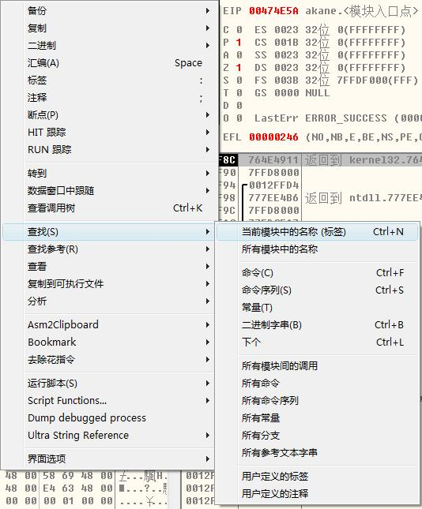
在弹出的窗口中找到GDI32.CreateFontIndirectA，右键，如图选择设置断点
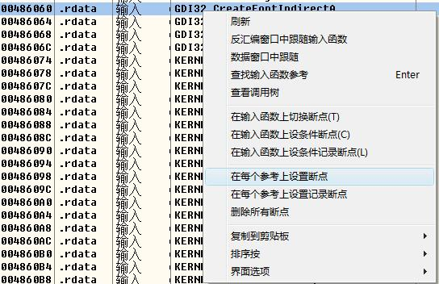
然后在主菜单中调试－〉运行，程序在如图处停止：
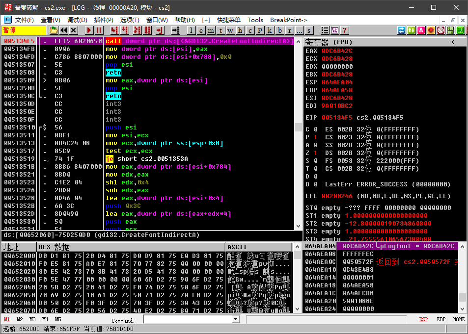
先在右下角堆栈窗口中的传入参数“0DC6B42C”，复制下来；再在左下角的数据窗口中右键，转到－〉表达式，粘贴。
回车，在此找到“80”。
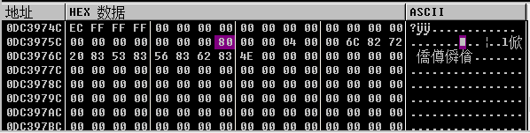
在“80”上右键，断点－〉内存写入。再不断点击运行，直到反汇编窗口中定位到“80”的位置。
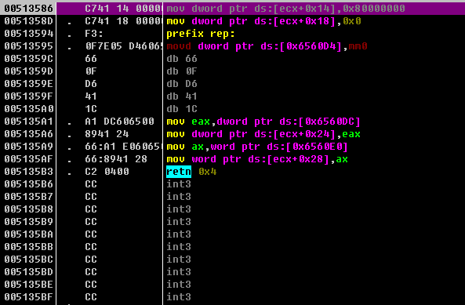
双击它，把80相应地改成86，点汇编，再关闭汇编窗口。
到此，主程序的修改第一步完成，接下来第二步，要修改字符边界检查代码。
（2）字符边界检查代码
现在很多Galgame输出文字都使用GetGlyphOutlineA来实现。这个函数每次传入一个字符的参数，将其转换成矩阵，再利用BitBlt等函数来绘图输出文字。然而每一种编码方式都是有编码范围的，超出范围的会参数输出去会造成不可预知的错误，这个时候就要加入字符边界检查代码，检查出超范围的输进去就会跳走，显示不出字符来（我这里输出的就是一堆问号）。
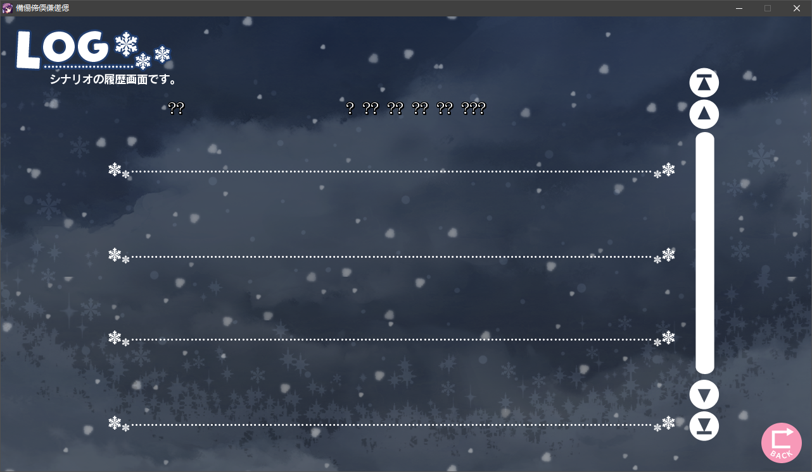
基于前一篇笔记所记Shift_JIS与GBK编码范围的差别，GBK的编码范围比Shift_JIS范围要大，中文编码在Shift_JIS范围下自然显示为问号。
所以现在要做的就是扩大它的检查范围。一般来讲检查的代码是这个样子的：
cmp al,①
jbe short XXXXXXXX
cmp al,②
jb short XXXXXXXX
cmp al,③
jb short XXXXXXXX
cmp al,④
ja short XXXXXXXX代码注释：汇编指令
cmp al,bl：将bl与al比较
jbe：al不高于bl时跳转
jb：al低于bl时跳转
ja：al高于bl时跳转
以上是字元在Shift_JIS中使用一个字节来表示时的情况，两个字节表示则需要两节边界检查：
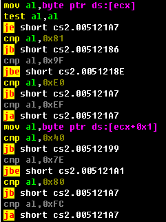
发现图示恰符合笔记中0x81-0x9F、0xE0-0xEF、0x40-0x7E、0x80-0xFC的边界。此时双击灰色部分，将4个上界全部改为GBK编码的上界0xFE。
右键－〉复制到可执行文件－〉所有修改，小窗口中右键，保存文件为cs2副本.exe到安装目录下。
转码部分完成。
测试部分
中文操作系统下直接运行cs2副本.exe，剧情文本可以显示，人名标签还是乱码。文本汉化的主要目的已经达到，剩下的就是其他方面和一些细节问题了。

后记
程序员虽然在游戏汉化组的各职务中不是工作量最大的一个（大部分汉化工作量最大的好像都是翻译···），但却是最重要的一个，往往也是最难的一个。没有程序员解包，汉化一开始就进行不下去；没有程序员封包，其他组员就都白忙活了；没有程序员测试，玩家到时候就不买帐了（虽然大多数玩家从来没有真正买过帐···）。 这回实际体验了一次Galgame的汉化，也算是对其中的难点有了一个初步的认识，如命令行程序的用法、字符集、windows对字符的显示原理、汇编语言、程序调试等。想要真正去掌握这门手艺的话，至少在掌握编程基础知识之上还得加强这些方面知识的学习。
致谢
感谢AmaF大大在程序修改上对我的一路指导：
https://github.com/regomne/chinesize/issues/16
感谢来自巴西的marcussacana大大，来自俄亥俄的tahu157朋友对我提问的回应：
https://github.com/marcussacana/CatSceneEditor/issues/2
https://forums.fuwanovel.net/topic/21377-csttextproc/?tab=comments#comment-500521
此外，本次汉化实验还参考了以下的帖子：
ONE ～輝く季節へ FullVoice 汉化实战篇[完]
Galgame 汉化破解初级教程：以 BGI 为例，从解包到测试
染成茜色的坂道破解技术内幕之实战篇
字符编码与游戏中的字符边界检查
在此一并感谢。
本文由 下川真哉 创作，采用 知识共享署名4.0 国际许可协议进行许可
本站文章除注明转载/出处外，均为本站原创或翻译，转载前请务必署名
最后编辑时间为: Apr 16, 2019 at 03:06 am 访问: 87 次